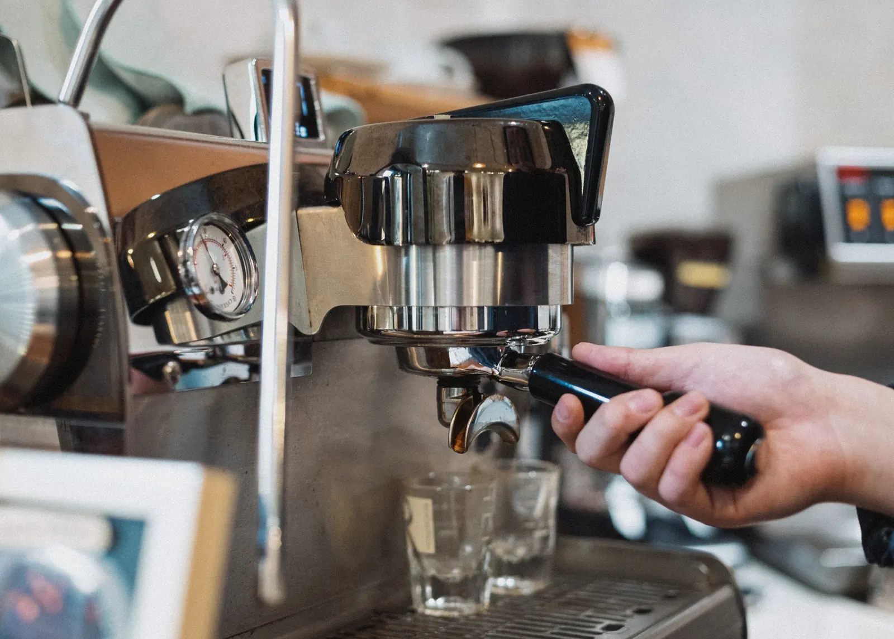

Espresso
25 ml, 25 Sekunden, 9 bar – das Herz jedes Kaffees.
- Crema
- Espresso

Start / Kaffee-Guide
Kaffee-Guide
Vom kräftigen Espresso bis zum samtigen Flat White – so unterscheiden sich unsere Klassiker, und woher die Bohnen kommen.
Kaffeesorten
Die gleiche Bohne, ganz verschiedene Getränke: Entscheidend sind das Verhältnis von Espresso, Milch und Schaum.
25 ml, 25 Sekunden, 9 bar – das Herz jedes Kaffees.
Ein Drittel Espresso, ein Drittel Milch, ein Drittel Schaum.
Doppelter Ristretto, wenig, aber feinporiger Mikroschaum.
Der Espresso wird zuletzt eingegossen – so entstehen drei Schichten.
18 Stunden kalt extrahiert: mild, schokoladig, wenig Säure.
Herkunft
Kaffee wächst im «Kaffeegürtel» rund um den Äquator. Höhe, Klima und Verarbeitung prägen den Geschmack – ähnlich wie beim Wein.
Wir kaufen unsere Bohnen über eine kleine Rösterei, die die Farmen persönlich kennt. So wissen wir, woher jede Bohne kommt und dass sie fair bezahlt wird.
Yirgacheffe, 1900–2200 m. Die Heimat des Kaffees – blumig und fruchtig.
Huila, 1600–1900 m. Ausgewogen und süss – Basis unserer Hausmischung.
Cerrado Mineiro, 1000–1200 m. Nussig, schokoladig, wenig Säure.
Antigua, 1500–1700 m. Vulkanböden geben Würze und Tiefe.
Sumatra, 1100–1500 m. Erdig und vollmundig, ideal für Espresso.
Röstgrade
Beim Rösten entstehen über 800 Aromastoffe. Je länger und heisser geröstet wird, desto weniger Säure und desto mehr Röstaromen.
Fruchtig, blumig, lebendige Säure. Ideal für Filterkaffee und Pour-over.
Bei uns: Pour-over des Tages
Ausgewogen, süss, Karamell und Nuss. Perfekt für Milchgetränke.
Bei uns: Hausmischung «Altstadt»
Kräftig, vollmundig, Bitterschokolade. Klassisch italienischer Espresso.
Bei uns: Espresso «Notte»
Probieren statt lesen
Unsere Baristas beraten Sie gerne und lassen Sie verschiedene Bohnen probieren. Jeden ersten Samstag im Monat findet ein kleines Cupping statt (Demo-Angabe).